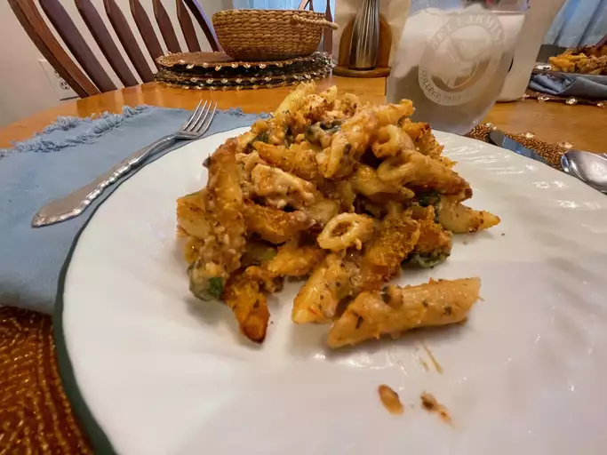

Pasta Pesto con Pollo

This pasta is incredibly wonderful to delight your palate.
Exquisite to eat with your family or friends.
Ingredients
- ½ cup seasoned bread crumbs
- ½ cup grated Parmesan cheese
- 1 tablespoon of olive oil
- 1 box (16 ounces) penne pasta
- 6 cups diced cooked chicken
- 4 cups grated Italian cheese mixture
- 3 cups of fresh baby spinach
- 1 can (15 ounces) of crushed tomatoes
- 1 jar (15 ounces) Alfredo sauce
- 1 jar (15 oz) pesto sauce
- 1 ½ cup milk
Steps
- Preheat oven to 350 degrees F (175 degrees C). Grease a 9x13-inch baking dish. Combine bread crumbs, Parmesan cheese and olive oil in a small bowl until evenly moistened; set aside.
- Fill a large pot with lightly salted water and bring to a boil over high heat. Once the water is boiling, add the penne and return to a boil. Cook the pasta uncovered, stirring occasionally, until cooked through but still firm to the bite, about 11 minutes. Drain well in a colander set in the sink.
- Meanwhile, combine chicken in a bowl with Italian cheese mixture, spinach, tomatoes, Alfredo sauce, pesto sauce and milk. Stir in pasta once ready and place in the prepared baking dish. Top with bread crumb mixture.
- Bake in preheated oven until bubbly and golden brown on top, 40 to 45 minutes.